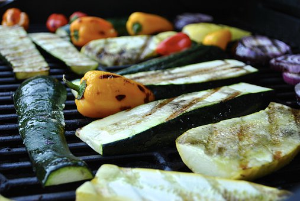

Grilled Vegetables
Easy to Make, Easy to Eat (If You Like Vegetables)
Try this recipe when you want grilled vegetables as a quick side dish.
Enjoy! Note: this recipe makes 2 servings and takes approximately 15 minutes or less to make.
Ingredients
- 3 cups of your preferred vegetables, roughly chopped (eggplant, zucchini, bell peppers, broccoli, etc.)
- 3 tablespoons olive oil
- 1/4 teaspoon sea salt (or regular salt)
- 1/8 teaspoon black pepper (freshly ground if possible)
Directions
- Wash your vegetables and pat them dry with a paper towel or clean kitchen towel (drying them helps them to cook better).
- Chop your vegetables into bite-sized pieces, and place the cut pieces in a medium-sized bowl.
- Heat your electric grill. (Note: most indoor electric grills have a standard heat setting; if your grill has a specific setting for grilling vegetables, please follow the manufacturer's directions.)
- Add the olive oil, salt, and pepper to the vegetables in the bowl; stir gently until all vegetables are evenly coated.
- When your grill has finished preheating, place your vegetables on the grill in an even layer and close the lid. Grill for 3-5 minutes, turning vegetables halfway if needed.